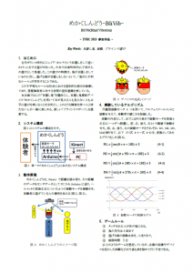

こんにちは、神奈川工科大学情報メディア学科3年生の菊崎駿介です。
先日で最後のセミナー授業が終わりました。
今回は今までのセミナーでどういうことをやってきたか、そして学んだことをまとめていきます。
IVRC2015
前半は「IVRC2015」出場を目指し、同じセミナー生の強矢君と協力して『めかくしんどう -BliVib-』の企画書、企画梗概作りを行いました。
以下はめかくしんどうの企画梗概になります。

まずはじめに企画アイディアを考えるにあたって、過去IVRCで発表された作品の調査と既存研究の調査を行い、考えたアイディアの新規性を確認しました。
既存研究の調査はIVRCだけではなく、オリジナルの作品開発や研究でも必須の手順なのできちんと覚えておきたいです。
アイディア出しから予備実験、試作機開発、ワードでの企画書作りといった一連作業を期限内に終わらせるにはチームでの連携が重要ですが、最初は連絡不足で話し合いの場が少なく、結果的に一連作業のスタートがかなり遅れてしまうことになってしまいました。このことから連絡の重要性を学び、以降はお互いの状況を報告しあうようになりました。
企画書にかぎらずですが、自分の作ったものをより良いものにするためには誰かの評価が必要です。企画書作りにあたって、何度も先生や先輩方のレビューをいただき修正を繰り返しました。このことから途中経過でも頻繁にレビューしていただくことが大切だと学びました。
先輩の論文レビュー
後半は卒業論文の書き方を学ぶため、白井研究室の先輩方が「第20回日本バーチャルリアリティ学会」で発表する論文のレビューを行いました。
先輩の論文をレビューしていて気づいたこと、考えたこと箇条書きでまとめていきます。
・文章中に「の」が連続してしまうと違和感を感じること（例、○○の△△は□□の～）
解決方法として言い回しを変える、または句読点で区切ってしまうのが良いと思われます（例、○○は△△である。□□は～）
・主語と結び間の記述が長いと、主語を見失ってしまう（例、○○を……より△△する）
解決方法として主語を結びの直前に持ってくるのが良いと思われます（例、……より、○○を△△する）
・文章間で表現は統一する（例、合わせて、合体させて）
この場合はどちらかで統一します。
・文章中の引用で、引用元名称はきちんと書く（例、[1]で示された～）
突然記号が出てくると違和感を感じます。解決方法として「引用[1]では」「○○[1]」のように書くと良いと思われます。
他の人の文章を読んでみると、今まで意識してこなかった書き手順が見えてきました。
しかしいざ自分で書くとなると難しいところです。何度も文章を書いてレビューを受けることが大切だと学びました。
まとめ
私が半年間のセミナー授業で学んだ一番のことは「作ったものを評価してもらう大切さ」です。
自信のない作品、文章だからこそ、誰かの目に触れることを恐れるのではなく、むしろ積極的に発表して評価されなければ改善することができないからです。
今後作るものは必ず友人、先生に見せて評価をしていただくことを意識していきます。
白井先生、先輩方、セミナーの皆さん、半年間ありがとうございました。
これからもどうぞよろしくお願い致します。


{kind=link}
{kind=link}
{kind=link}
{kind=link}